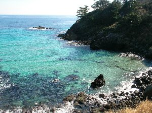
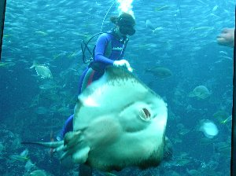
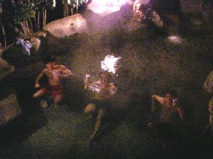
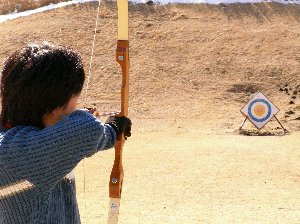

温泉で新年会 | 2006年1月（幹事：珍獣） |
|---|---|
| 式根島で、温泉に浸かりながら飲酒（体に悪いよ）にハマリ、是非他でもやってみよう！ と言う事になり、今年の新年会は、以前にも行った、伊豆熱川の「花いっぱい温泉」の貸し別荘（露天風呂付き）で、土日お泊りで行うことになりました。 綿密な準備をして頂いた幹事の珍君が、突然の仕事の為に土曜の夜からの参加になってしまい残念ですが、「下田観光組」6名は、朝も早くから静岡を出発して、まずは「浄連の滝」にて観光。 清らかなマイナスイオンを充填！ ちなみに、「寒い伊豆をチャリンコで走ろう！組」2名は、独自に伊豆へ乗り込みました。集合場所は直接別荘へ。 さて、私は下田観光組に参加したので、そちらの話を書いていきましょう。 | |
 下田に行く途中の浄蓮の滝 |  白浜海岸隣の眺望所 |
| 早々に下田に着いてしまった我々は、とりあえず白浜海岸近くの眺望所、コバルトブルーの海が見える駐車場にて休憩。 歩いて岩場先端まで行ったりして、潮風を堪能。 海がもの凄く綺麗で、岩場に溜まった水は小さな水槽の様でした！（魚いないけど・・） ここで、あっくんが懸命に貝を探している様でしたが、どうも食べられる貝は見つからなかった様です。 そして、下田海中水族館へ。 ここは、水槽がそれほど多いと言う訳ではなく、むしろ少ない？ が、数々のショーが楽しめる場所です。 | |
 コバルトブルーの海を前にして佇む○○○さん |  下田海中水族館 |
| まずは、水槽の魚達に餌付けショー。 エイだかの食べる姿がぷりてぃ〜。 次にイルカの海上ショー（お兄さんがイルカに乗ったり）。 そしてラッコの餌やり（貝を観覧席の窓に叩き付ける姿がキュート）。 アシカショー（体柔らかいよね。結構ジャンプ出来るんだ）。 再度イルカショー（場所が海上からプールに変わって、演技も違う）。 最後にペンギンの餌やりを見て、ペンギンと記念写真を取り、水族館を後にしました。 ホント、色々なショーを見せてくれて楽しい所です。 都会に有る水族館の様な洗練さは有りませんが、アイデアで頑張っているって感じが伝わってくるし、見る位置が近いと思う。 ホームページにて割引券がＧＥＴ出来ると思うので、下田に行った折には訪れては如何でしょう。 夕飯は出前を取るから、宴会用の刺身、餃子、明日の朝食（前回はこれを忘れてヒモジイ思いを・・）の買出しをして別荘へ向かう。 既に「寒い伊豆をチャリンコで走ろう！組」2名は到着していました。 かなり疲労困憊の様子。 今日帰るつもりだったまーしーは、帰宅を諦め泊まり組みに変更。 | |
|  エイの餌付けショー |  イルカのジャ〜ンプ |
| 今回は、「しふとべる」の前身「たすまんず」発足当時からのメンバーで、現在は伊東在住のむらべーさんが、お子さんのちゃんと共に、顔出しだけだけど来てくれました！ なんか懐かしいです〜 知っている人が尋ねてくれると嬉しいね〜 また、是非企画に参加してください！ 出前を注文し（今回は中華料理屋さん）、みんなで露天風呂に入ることにしました。 女性もいるので、さすがに水着着用です。 しかし、いくら水着着用と言っても、ちょっと恥ずかしいかな。けど楽しい♪ 普段出来ないもんね。こんな事。 男性陣はビールを持ち込み（だから体に悪いって！でも、美味い♪）、ほろ酔い気分！ 天気が良いため、頭上には満天の星が見えます。 因みに目が悪い私に、最近レーシックにて視力回復したいづみさんは、「ほらっ、あそこの星！ なに！ 見えない？！」 と、レーシックの素晴らしさを知らしめていました。 | |
|  温泉での一コマ（分かりづらいか） |  別荘内にて宴会＆カラオケ |
| 温泉から出ると、既に出前が届いていたので、調理免許を持つアル兄が刺身を切り、餃子を焼いて宴会の始まりです。途中で、仕事終了後駆けつけた珍君を交えて、場は盛り上がっていきます。 今回、カラオケ好きのシュガーが不参加となってしまった為、せっかく借りたカラオケを誰もやらないかと思っていたら、結構みんなハマリだし歌っていました！ やっぱ楽しまなくっちゃ！ 夜の１時。いつもの就寝時間が来ると、とたんに眠くなり、私は一足お先にお休みさせて頂きました。 他の皆さんは２時位まで楽しんでいたようです。 翌朝、朝風呂に入り、朝食のパンとスープ、コーヒーを頂き、１０時出発。 いや〜、やはり朝食は大事です！ 本日は皆で、大室山にアーチェリーを体験するため行きました。 アーチェリー場が何処に有るかと思いきや、リフトで山頂に上り、火山の火口にあたる窪んだ所に有りました。 有ると言っても、的が有るだけ。 山頂の売店で道具を借り、勝手にやれ状態。 一人３０分６００円で、矢を５本貸してくれます。 矢を無くしたり、折ったりすると１本５００円だそうです。 いくらなんでも、無くしたりはしないだろう！ とタカをくくっていたが、当たらない！ 的に当たらないんです！ | |
 大室山のアーチェリー場 |  上手く当たれ！ |
| ギギッと力をいれ弓を引き、放す。それだけの作業だけど、目標を大きくずれて、的の後ろの方の斜面に突き刺さる！ 刺されば発見しやすいが、弾かれて転がると、その後ろは草むら（ずいぶん距離は有るんだけど）。 ハチさんは斜面の上の方まで探し出すし、私は、地面に深く突き刺さった矢を抜くのに必死！ みんな始めてのアーチェリーを楽しんだ後は、若干の疲れが・・・これまた普段使わない筋肉を使ったりしているからね。（後で、かむいさんは筋肉痛になっていました）でも、当たったときの ザンッ と心地よい音は良いですね。 また、やってみたい！ お昼を、で取って（ここの、すきみ丼美味しかった！）、今回は早々と帰宅の路につきました。 今回は、のんびり癒した旅が目的ですから。 それでも、遊びつくしたお陰か、心地よい疲労感で一杯です。 帰りの車の中、若干記憶がありません〜 あっくん運転ありがとう〜〜〜(^^)/~~~ 単独運転していた皆さん、お疲れ様でした！ また、やりたいね。 写真＆コメント ｂｙ べっしー | |